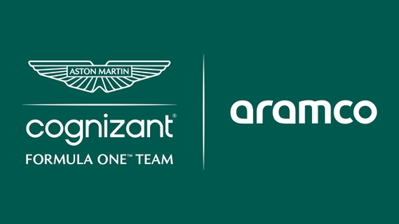
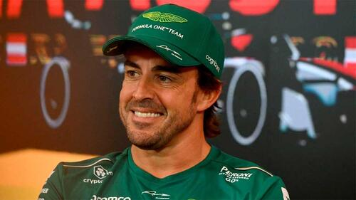

-Aston Martin es un equipo privado de origen británico con sede en Silverstone, Gran Bretaña. Es propiedad de un consorcio de inversores encabezado por el multimillonario canadiense Lawrence Stroll
-Aston Martin vuelve a la Fórmula 160 años después. La marca compitió en el Gran Circo en las temporadas 1959 y 1960, en las que disputó cinco Grandes Premios sin sumar puntos. Desde 2018 fue patrocinador principal de Red Bull.
En la temporada 2021 volvio el nombre Aston Martin a la formula 1 i no les fue del todo bien quedaron septimos en el mundial de constructores
En 2022 cuando hubo el cambio de reglamento se esperaba mas de ellos y no paso comenzaron siendo el penultimo peor coche de la parilla y a mitad de temporada dieron un paso hacia delante acabando sextos del mundial de constructores
En 2023 fue el año de Aston Martin con la llegada de Fernando Alonso y fichajes de inginieros nuevos hiciron una temporada excelente
Comenzaron la temporada muy bien con podios de Alonso en las primeras carreras y un ritmo sensacional siendo el segundo mejor coche porque Red Bull estaba en otra liga
A mitad de temporada hubieron unos altibajos porque los demas equipos mejoravan tambien mucho pero la acabaron muy bien con Alonso siendo quearto en el mundial de pilotos i Aston Martin siendo quintos en el mundial de constructores
 